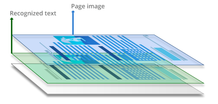

# Extracting text with pdfplumber
with pdfplumber.open("../Data/Imperial Oil Annual Report 1973.pdf") as pdfplumber_1973:
print(pdfplumber_1973.pages[1].extract_text())
# Extracting text with pymupdf
import pymupdf
pymupdf_1973 = pymupdf.open("../Data/Imperial Oil Annual Report 1973.pdf")
print(pymupdf_1973[1].get_text())
# Extracting text with pypdf
from pypdf import PdfReader
pypdf_1973 = PdfReader("../Data/Imperial Oil Annual Report 1973.pdf")
document_text = ''
# loop over the pages
for page in pypdf_1973.pages:
# remove newlines from extracting text
page_text = page.extract_text().replace("\n", "")
document_text += page_text
print(document_text)Extracting Data from PDFs with Python

A brief history of PDFs üìÉ
- Portable Document Format - released by Adobe in 1993
- Developed with the idea that every document should be readable and printable on any device while preserving the fidelity of the content
A brief history of PDFs üìÉ
- Grew in popularity from the 1990s to 2000s, became an open format in 2008
- Multiple standards have developed under the PDF format, and not all PDFs are alike when it comes to working with them
3 types of PDFs
“True” or digitally created PDFs
These are PDFs created digitally using software such as Microsoft Word. They consist of searchable text and images.
3 types of PDFs
“Image-only” or scanned PDFs
These are PDFs that are created by scanning or photographing hard copy documents. They contain only the scanned/photographed images of pages and are not automatically searchable.
3 types of PDFs
Searchable or OCRed PDFs
These are the result of applying Optical Character Recognition (OCR) to image-only PDFs. The resulting PDF has two layers – one with the page image, and the other containing the recognized text.
PDFs as data
What can be extracted from PDFs?
- Text
- Images
- Structured data (tables)
A word on libraries üìö
There are several libraries for working with PDFs in Python that do many of the same things. During this training we’ll be comparing their performance for different tasks:
pdfplumberpyPDFPyMuPDF
PDFs as data üìä
To Python, every PDF is made up of two components: the document metadata and a set of pages.
Each page consists of objects that can be classified as:
characters
lines
rectangles
curves
images
and metadata about each of these objects
Extracting text from PDFs üî°
Goal: Extract the text from the 1973 Imperial Oil Report
Some questions:
Will the text be extracted left to right across the page, or by column?
How can we combine the text from all of the pages?
Code for extracting text
Extracting text from PDFs - summary
Libraries for text extraction:
pdfplumber- has nice filtering features and great documentation, but processes text line-by-line so not great for multi-column spreads.pyPDF- great library for high-quality basic text extraction.pyMuPDF- similar to pyPDF with varying accuracy, so good to check both.
Extracting text from PDFs - tips üëâ
Check your results! Compare ouputs across libraries.
Make sure your output reflects the layout of the text, and doesn’t just scan left to right.
PDFs often contain hidden newlines to preserve the layout of the text, so keep an eye out for strange line breaks and remove
\ncharacters if necessary.Loop over pages to combine document text.
Extracting images from PDFs üñºÔ∏è
Because our old document was OCRed, we were able to extract at least some text from it
However, OCR doesn’t extract images - if you remember, for OCRed documents, the entire page actually has two layers, the page image and the OCRed text - so if we tried to extract images, we’d just get the full page images.
For image detection, we’re limited to working with digital PDFs - such as the 2023 Imperial Oil Annual Report
Code for extracting images
# read in the document with pypdf
pypdf_2023 = PdfReader("../../Data/Imperial Oil Annual Report 2023.pdf")
for page in pypdf_2023.pages:
# loop over the images
for count, image_file_object in enumerate(page.images):
# write each image to a .jpg file
with open(str(count) + image_file_object.name, "wb") as fp:
fp.write(image_file_object.data)Extracting tables from PDFs üìÖ
Some of these libraries can actually detect and extract tables from PDFs! This feature also performs best on digital PDFs, and doesn’t always detect things that we as humans know to be tables.
The best implementaton by far is in PyMuPDF - let’s give it a try on a Baltimore Police Department Weekly Incident Report from Open Baltimore.
Code for extracting tables
police_report = pymupdf.open("../Data/police_report_week12.pdf")
page = police_report[0]
tabs = page.find_tables()
df = tabs[0].to_pandas()
page_text = page.get_text()
table_dates = page_text[page_text.find("YEAR TO DATE")+len("YEAR TO DATE"):page_text.find("%")].split()
header_list = ["Crime type", table_dates[0] + "-" + table_dates[1],
table_dates[2] + "-" + table_dates[3],
"7-day percent change", table_dates[4] + "-" + table_dates[5],
table_dates[6] + "-" + table_dates[7], "28-day percent change",
table_dates[8] + "-" + table_dates[9], table_dates[10] + "-" + table_dates[11],
"YTD percent change"]
df.columns = header_list Extracting tables - tips üëâ
Check your results, including whether the header is captured
Don’t forget about text extraction!
Summary
pypdf:best OCR interpreter for extracting text from older documents
best for extracting images
pymupdf:- best for tables
pdfplumber:- good package for beginners
Docs and resources
Thanks!
Please give us your feedback on this session at bit.ly/survey-data-bytes and join us at the next Data Bytes!
Data Bytes - Fall 2024